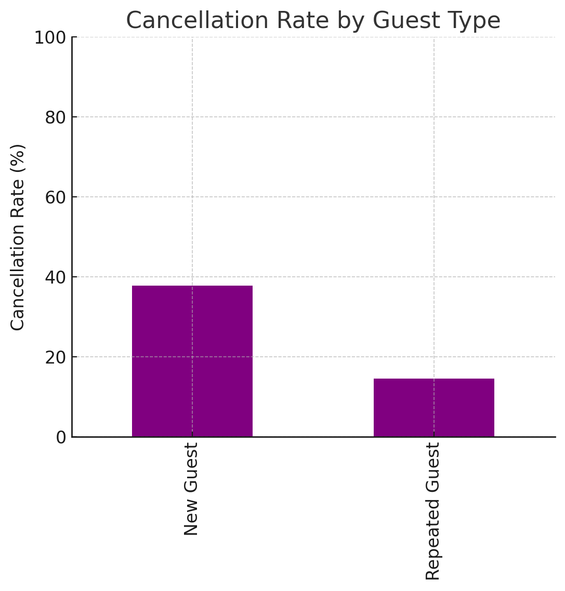
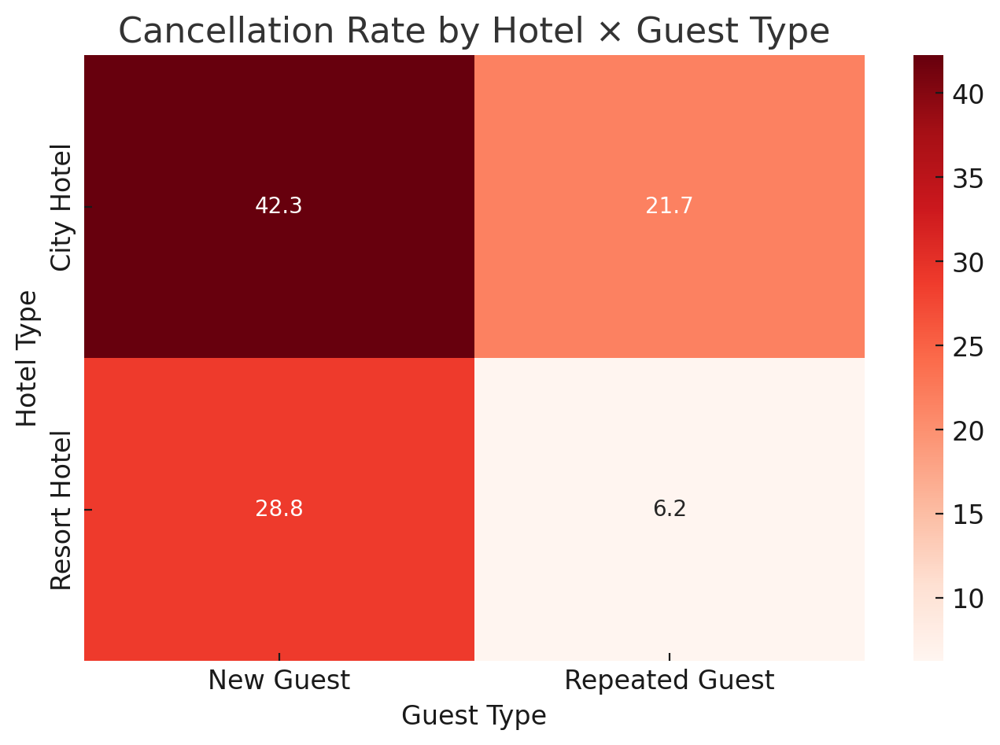

고객 특성 — 신규 vs 재방문
신규 ≈ 37.8%
재방문 ≈ 14.5%
재방문은 신규 대비 ↓

[그림 7-1] 신규/재방문 고객의 취소율 비교
- City Hotel에서 신규 고객 취소율(42%)이 가장 높으며, Resort Hotel에서 재방문 고객 취소율(약 13%)이 가장 낮음
- 충성 고객(재방문)은 취소율이 유의하게 낮음 → 관계 유지가 손실 방지에 핵심
- 신규 고객은 취소율이 높음 → 초기 온보딩/예약 조건 최적화 필요
실행 액션
- 신규 고객 대상: 사전결제·유연/비유연 요금제 가이드, 리마인드 메시지 강화
- 재방문 고객 대상: 등급별 혜택(업그레이드/포인트)로 이탈 최소화
호텔 × 고객 유형
City×신규: 위험군
Resort×재방문: 안전군

[그림 7-2] 호텔 유형 × 고객 유형별 취소율 히트맵
City×신규 최상위, Resort×재방문 최저.
- City Hotel × 신규: 출장/도심 여행의 계획 변경 가능성↑ → 확정성 강화 정책 필요
- Resort Hotel × 재방문: 목적성·충성도↑ → 혜택 유지·업셀 기회
정책 제안
- City×신규: 예약 리드타임 길면 보증금/사전결제 비율 상향, D-3 알림
- Resort×재방문: 번들/롱스테이 제안, 재방문 리워드 강화